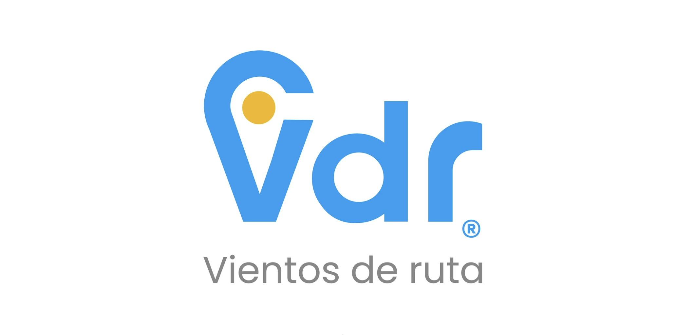

Vientos
de Ruta
// EXPLORANDO LA IDENTIDAD FEDERAL
NUESTRO ENFOQUE
Vientos de Ruta es una comunidad que busca compartir viajes y experiencias de cada rincón de Argentina. Diseñamos una marca que respira aventura y una plataforma web que sistematiza esta narrativa visual.


DESARROLLO DIGITAL
Creamos una experiencia web optimizada para la visualización de contenido fotográfico, permitiendo a la comunidad explorar destinos mediante una interfaz intuitiva y dinámica.